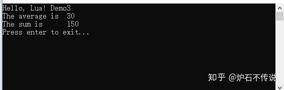

Home
题外话：今天周末，刚好在家有时间就把我这次项目组内部分享的文章贴出来，分享给大家，同时也方便以后自己翻阅。
一、 Lua简介
目标：Lua语言本身是用C语言来编写开发的。当初设计Lua的目标就是想让Lua成为一个很容易嵌入其它语言中使用的语言。现有很多应用程序使用Lua作为自己的嵌入式脚本语言，以此来实现可配置性、可扩展性。
特性：Lua是一种轻量语言，它的官方版本只包括一个精简的核心和最基本的库。源码是开源的，把源码编译之后仅仅一百多K，可以很方便的嵌入别的程序里。Lua同时也易于扩展，由宿主语言(通常是C或C++)开发和提供一些功能，Lua可以很容易的使用它们。
二、 lua和其他宿主语言交互的桥梁-栈
1、Lua与其他宿主语言的交互，其实是通过C语言实现的虚拟机栈来实现的交互的。Lua在C函数和脚本函数之间创建了一种虚拟栈的结构，栈的元素代表一个Lua的值(table, string, nil等等8种基本类型)。Lua提供了一系列C API用于操作栈，比如将元素入栈，出栈，删除等等。在调用这些API之前，通常都需要将必须的值压入栈，在API调用结束后，再把结果从栈中取出。
2、接下来我们看一下Lua的虚拟机栈大概是个什么样子的。下面是我用mspaint手绘的一张图：
从这张图中我们可以看出：
1、栈的特性，先进后出。
2、栈中的每个元素可以为任意的lua的8个基本数据类型中的一种。
3、假如lua虚拟机栈中有lua的8个基本数据类型。那么从栈顶到战底用正数索引表示就是8到1，栈顶是8，栈底是1。用负数索引表示就是-1到-8，栈顶是-1，栈底是-8。
4、正数索引的好处就是，栈底永远是1。
5、 负数索引的好处就是，栈顶永远是-1。
三、 常用接口函数讲解
下面一张是宿主程序和Lua虚拟机交互图，这张图大致演示了，宿主语言怎么和Lua语言进行交互的。
1、luaL_dofile(L, fn)
luaL_dofile函数实际上是执行了lua_load函数来加载lua文件，加载成功之后会编译一个代码块作为一个匿名函数放置在栈顶。
然后调用lua_pcall执行匿名代码块，最终C代码才能调用lua中的函数和变量等等。
2、lua_call(lua_State *L, int nargs, int nresults) 和 lua_pcall(lua_State *L, int nargs, int nresults, int errfunc)
lua_call在无保护模式下面运行的，出错直接抛出异常。而lua_pcall在保护模式模型下运行的，出错获捕获异常信息。这两个函数调用之后都会把栈顶的数据弹出栈。
3、lua_getfield(lua_State *L, int idx, const char *k)
lua_getfield是用来取出lua中的一个值，一般都是先找到table所在的位置索引index，然后传入key，取出值。
1、lua_getfield(L, LUA_GLOBALSINDEX, key)
等价于 lua_getglobal(L,key)
含义：从全局表中取出key字段的值
2、lua_getfield(L, index, key)
等价于：lua_pushstring(L,key) lua_gettable(L,index)
含义：从栈中找到table所在的位置索引index，然后取出key字段的值，并把值压入栈中。
4、lua_setfield(lua_State *L, int idx, const char *k)
lua_setfield用来改变lua中的一个值，一般都要先把改变的vlaue通过Push压入栈等（lua_pushstring、lua_pushnumber等），然后在调用lua_setfield来进行取值赋值操作
1、lua_setfield(L, LUA_GLOBALSINDEX, key)
等价于：lua_setglobal(L,key)
含义：从全局表中找到key，然后用栈顶的值value，覆盖掉key原来的值。最后把栈顶的值弹出栈。
2、lua_setfield(L, index, key)
等价于：
lua_pushstring(L, key);
lua_pushnumber(L, value);
lua_settable(L, index);
含义：从栈中找到key，然后取出他在table中的位置索引index的值，用栈顶的值覆盖掉key原来的值。最后把栈顶的值弹出栈
四、示例
这次演示采用的宿主语言是C++。
我们看一下第一个例子：C++如何调用Lua的函数。
Lua码如下：

C++代码如下
运行结果：
带栈信息的运行结果：
第二个例子：Lua如何调用C++中的函数
Lua代码如下：
C++代码如下：
运行结果：
带栈信息的运行结果：
第三个例子：C++如何获得Lua中的变量和Table的值，同时修改他们。
Lua代码如下：
C++代码如下：
运行结果：
从这三个例子里面我们可以看出，lua和宿主语言的交互主要是通过栈来完成的。时刻要留言栈内哪些元素进栈了，那些元素出栈了，栈内还有哪些元素。